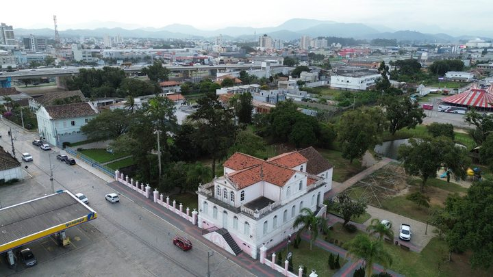

Tijucas · CulturaTijucas assina ordem de serviço para reformar o Casarão Gallotti, e o Mercado Público fica para 2028
Outra obra do centro de Tijucas, a poucos passos da avenida do desfile.
A Diretoria Municipal de Trânsito e Transportes divulgou a lista das ruas que ficam bloqueadas dos dois lados da avenida. O desfile começa na Rua Mauri Afonso da Silva e termina na Rua Tiradentes. O horário das interdições não foi informado.
Em 30 segundos · Modo de Leitura, formato original Santa Informa
O Desfile Cívico de Tijucas acontece no dia 7 de setembro, uma segunda-feira.
Ele ocupa a Avenida Hercílio Luz, no centro da cidade.
O trajeto começa na Rua Mauri Afonso da Silva.
E termina na Rua Tiradentes.
Onze ruas ficam bloqueadas do lado direito da avenida.
Outras nove ficam bloqueadas do lado esquerdo.
A Rua Treze de Maio aparece nos dois lados da lista.
Quem organiza o trânsito é a DITRAN, a diretoria municipal do setor.
A Prefeitura pede rota alternativa e atenção à sinalização.
O horário do desfile e o das interdições não foram divulgados.
InfraestruturaPublicada em Redação Santa Informa
Quem for a Tijucas no feriado de 7 de setembro vai encontrar o centro fechado em vários pontos. A Prefeitura, pela Diretoria Municipal de Trânsito e Transportes, a DITRAN, informou que haverá alterações no trânsito por causa do Desfile Cívico, e publicou a lista rua por rua. Segundo o aviso, as interdições foram planejadas para garantir a segurança de crianças, estudantes, participantes, famílias e do público que assiste.
O desfile acontece na Avenida Hercílio Luz, a via principal do centro. A concentração e o começo do trajeto ficam na altura da Rua Mauri Afonso da Silva, e o encerramento é na Rua Tiradentes. Todas as ruas que desembocam nesse trecho, dos dois lados da avenida, entram na lista de bloqueio.
Do lado direito da Avenida Hercílio Luz ficam bloqueadas as ruas Geraldo Rebelo, Rio de Janeiro, Pará, Coronel Izidoro, Manoel Luiz dos Santos, Monsenhor Augusto Zuco, Treze de Maio, José Steil, José Rosendo dos Anjos, Olavo Berlinck e Tiradentes. São onze.
Do lado esquerdo ficam bloqueadas as ruas Taxista Maicon Rosa, Ceará, Bahia, José Joaquim Santana, João Antônio Fagundes, Treze de Maio, Alvina Simas Reis, Rua do Governo e Manoel Nahum de Brito. São nove. A Treze de Maio aparece nos dois lados, porque cruza a avenida.
A orientação é simples: respeitar a sinalização montada no dia e usar rota alternativa durante o período das interdições. Não há, no aviso, indicação de qual desvio usar, então quem precisa atravessar a cidade vai ter que resolver no mapa antes de sair de casa.
Tijucas é vizinha da Costa Esmeralda e fica no caminho de quem desce a BR-101 rumo à Grande Florianópolis. No feriado, muita gente de Itapema, Porto Belo e Bombinhas passa por lá, seja para visitar parente, seja para ir ao comércio da região. Quem só está de passagem pela rodovia não sente nada. Quem entra no centro, sente. Vale reservar um tempo a mais no relógio.
O resumo de 30 segundos está no topo e a versão completa é o texto acima. Aqui ficam as três leituras da casa sobre o mesmo assunto.
Clara, a otimista
Desfile de 7 de setembro é dos poucos dias em que a cidade inteira se junta na mesma calçada. Criança de uniforme, banda desafinando na curva, avó procurando o neto no meio da fila. Fechar rua para isso é fechar rua por um bom motivo.
E o aviso saiu com bastante antecedência, mais de dez dias antes. Quem precisa passar por Tijucas naquela manhã já pode se organizar sem susto.
Seu Prudêncio, o criterioso
Merece atenção a informação que falta. O aviso diz quais ruas fecham, mas não diz a que horas fecham nem a que horas abrem. Para o morador que tem a garagem dentro do trecho bloqueado, essa é a informação mais importante de todas, e é justamente a que não está lá.
Vale acompanhar também o que acontece com o ônibus municipal, porque o texto não fala nada de linha e itinerário. Uma sugestão útil para quem precisa circular naquele dia: se o destino é do outro lado da cidade, use a BR-101 e entre pelo acesso mais próximo do ponto final, em vez de tentar cortar pelo centro.
E é justo reconhecer o cuidado da Prefeitura em um ponto. Publicar a lista rua por rua, dos dois lados da avenida, é bem mais útil do que o aviso genérico de que o centro terá bloqueios. Com essa lista na mão dá para desenhar o desvio em casa, mesmo sem o horário.
Caco, o sarcástico
Vinte pontos de bloqueio. O centro de Tijucas vai virar um labirinto temático, com bandeirinha e tudo.
A Prefeitura recomenda usar rotas alternativas. Excelente conselho, e certamente o motorista já tinha pensado nisso ao encontrar o cone atravessado na rua.
O desfile começa na Mauri Afonso da Silva e termina na Tiradentes. Já o motorista desavisado começa na Hercílio Luz e termina em Canelinha.
Fontes: Prefeitura de Tijucas, aviso publicado em 26 de agosto de 2026, às 16h57, pela Diretoria Municipal de Trânsito e Transportes, de onde saem a data de 7 de setembro, a realização do desfile na Avenida Hercílio Luz, o começo do trajeto na Rua Mauri Afonso da Silva e o encerramento na Rua Tiradentes, a lista das onze ruas bloqueadas do lado direito e das nove do lado esquerdo, a justificativa da segurança dos participantes e do público e a orientação para respeitar a sinalização e usar rota alternativa. A foto do topo é imagem ilustrativa de banco gratuito e não registra o fato noticiado.

Tijucas · CulturaOutra obra do centro de Tijucas, a poucos passos da avenida do desfile.
 Itapema · Cidade
Itapema · CidadeO desfile da nossa cidade, no mesmo feriado.
 Porto Belo · Poder Público
Porto Belo · Poder PúblicoOutra data marcada na agenda pública da região em setembro.